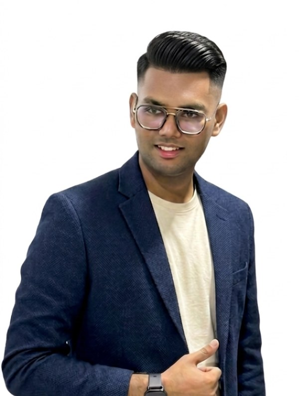
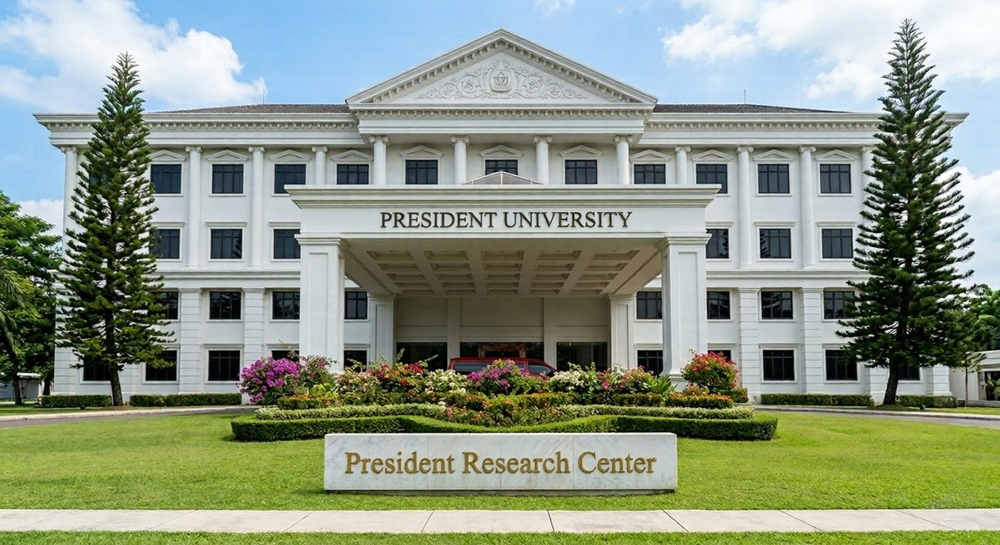
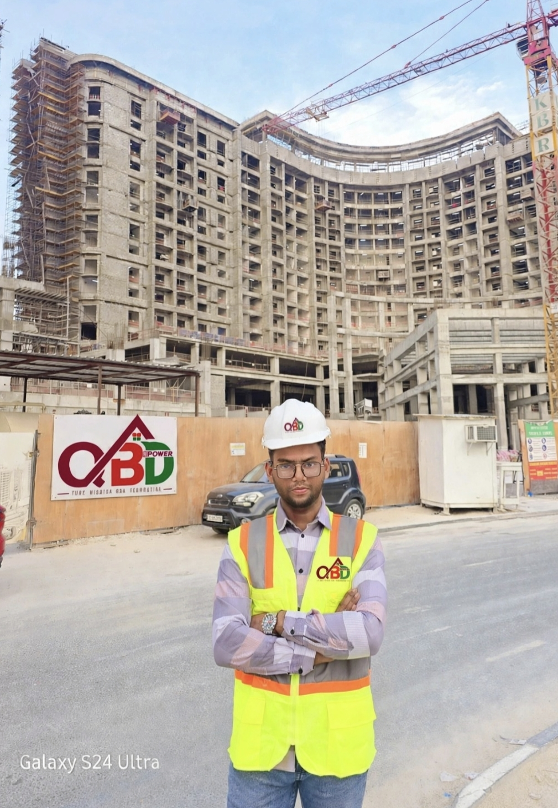

Power Systems
Electrical power engineering, system modelling and analysis.
TECHNICAL DIRECTIONENGINEERING · LEARNING · BUILDING
PORTFOLIO / 2026
I’m Forhad, an Electrical Engineering undergraduate at President University, Indonesia. I’m building my foundation in Power Systems through university projects, technical software practice and hands-on learning.

Building core electrical engineering knowledge.
Interested in AI-assisted research and prototyping.
Documenting process, evidence and lessons.
A LITTLE ABOUT ME
My path combines an engineering education with practical site experience. I’m interested in how electrical systems are designed, operated and improved, and how emerging AI tools can support practical problem-solving.
I’m currently an undergraduate student, so my strongest evidence comes from university work, project demonstrations and a growing collection of technical exercises. I aim to communicate what I have actually built, what I understand, and what I’m still learning.
See projects and learning notes ↗ACADEMIC FOUNDATION
Undergraduate · Electrical Engineering
Intended technical direction: Power Systems

FIELD EXPERIENCE
QBD POWER TRADING CONTRACTING & CLEANING SERVICES
Coordinated daily site activities, allocated manpower, and tracked progress against daily and weekly plans. This 14-month role developed practical skills in site coordination, leadership and on-ground problem-solving.

TOOLS I’M EXPLORING
Electrical power engineering, system modelling and analysis.
TECHNICAL DIRECTIONDeveloping familiarity with power-system modelling workflows.
LEARNING IN PROGRESSExploring computational tools for engineering learning.
LEARNING IN PROGRESSInterested in AI-assisted development, Arduino and IoT prototypes.
EXPLORATIONPROJECTS & EVIDENCE

A university project exploring sensor-based flood monitoring. Presented at President University’s Living Plaza exhibition, where I presented the project and explained its concept, functionality and practical value to visitors.
Explore project evidence ↗
A learning log for documenting software practice, assumptions and understanding as the work develops.
View learning log ↗HAVE A PROJECT IN MIND?
I’m open to thoughtful conversations, learning opportunities and practical collaborations around engineering and technology.